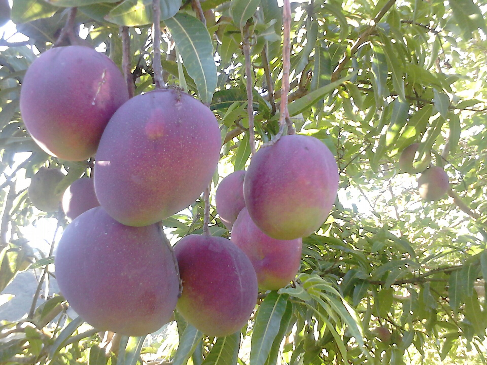

Árvores e Frutíferas
Manga Coração de Boi
Mangifera indica · cultivar Coração de Boi
Coração de Boi é um nome usado para uma variedade de manga, fruto da mangueira (Mangifera indica). As descrições da variedade destacam frutos de formato que pode lembrar um coração, mas características como tamanho e cor variam conforme a seleção e o cultivo. A foto representa mangas identificadas com esse nome popular.
- Espécie
- Mangifera indica
- Grupo
- Variedade de manga
- Destaque
- Nome associado ao formato do fruto